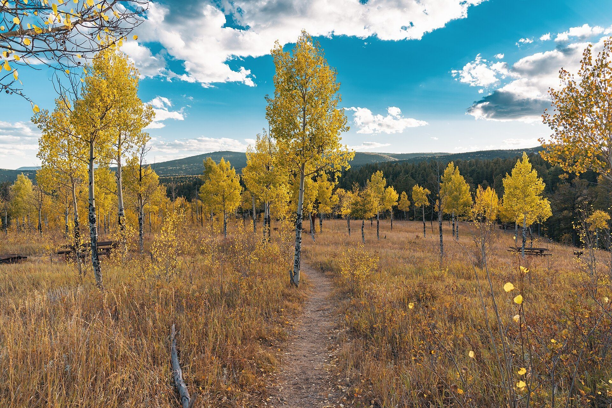
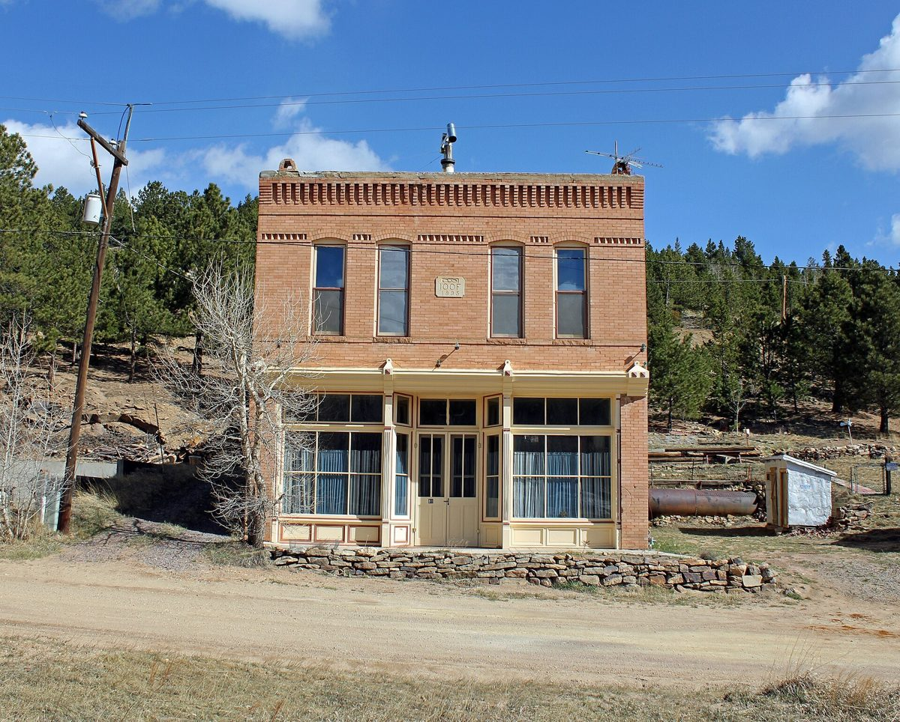
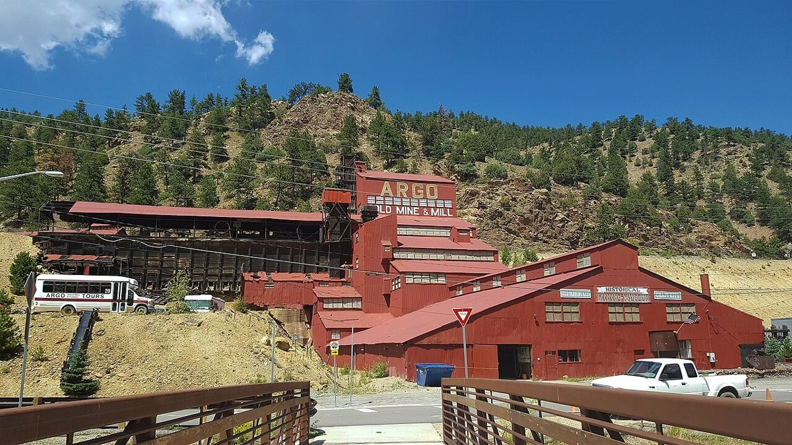
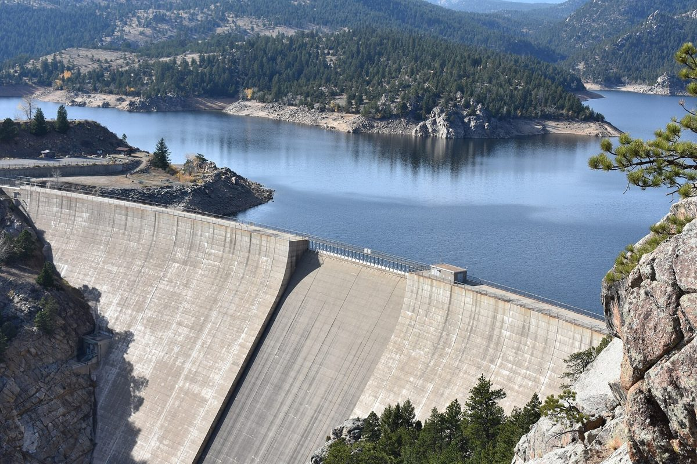
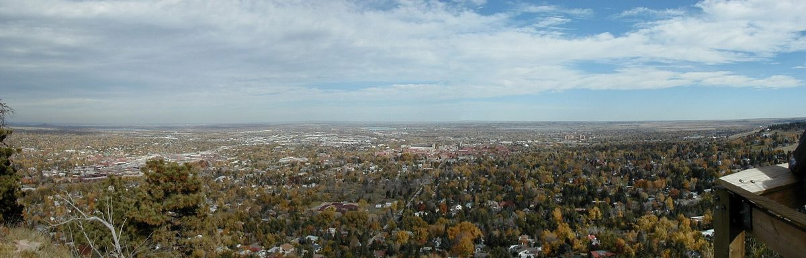

⛰Magnolia Road
Off Boulder Canyon and straight up to a high plateau of ranches and ponderosa pines, with the Indian Peaks lined up to the west. The top half is dirt.

1 day · a loop from Boulder
A half-day sampler: forest dirt, a ghost town, the Oh My God Road, and home past Panorama Point and Gross Reservoir.
Why ride it
Everything the longer trips promise, close to home and done in a relaxed half day. The dirt starts just up Boulder Canyon and climbs to the mining hills above Central City: a ghost town, then the Oh My God Road down to Idaho Springs for lunch. The ride back goes past a hundred-mile view of the Divide, down to Gross Reservoir and its raised dam, and home by Flagstaff's switchbacks. A good first dirt day.
The ride
Scroll or pinch to zoom; roads and their names appear as you zoom in. Day 1 in orange. Maps: © OpenStreetMap contributors, SRTM | style © OpenTopoMap (CC-BY-SA); relief and rivers: USGS The National Map.
Day 1
90 mi · about 2½ h of riding · 40 mi dirt
Boulder to Idaho Springs · 44 mi
Off Boulder Canyon and straight up to a high plateau of ranches and ponderosa pines, with the Indian Peaks lined up to the west. The top half is dirt.
Back roads through quiet forest and ranch valleys, a little rougher than the rest.

Up Apex Valley and over the hill to a near-empty gold camp: false fronts, mine dumps, and a Masonic lodge that still meets in its own ghost town.

Past the old lodge hall at Russell Gulch, then down Virginia Canyon: a dirt shelf road past old mine workings, with long views all the way to Idaho Springs.
Idaho Springs

Lunch on Miner Street among the old storefronts. Look across the interstate for the Charlie Tayler waterwheel beside a waterfall: its miner is said to have put his good health down to never kissing a woman or taking a bath.

The big red gold mill above town, open for tours. Since May 2026 a cable car also climbs over 1,000 ft from town to a lookout on the ridge.
Idaho Springs to Boulder · 46 mi

The richest square mile on earth, the miners said: Victorian brick, mine dumps and an 1878 opera house. Black Hawk, next door, is all casinos now.

Gap Road runs right past the overlook, with about 100 miles of the Continental Divide spread out to the west. A state park pass may be needed to stop.

A dirt road down past the dam, newly raised to 471 ft in a project that runs into 2027. Trucks and flaggers are likely until then: check that Gross Dam Road is open.

Stop at the Lost Gulch overlook for the mountains behind, then drop through Flagstaff's tight switchbacks with all of Boulder spread out below.